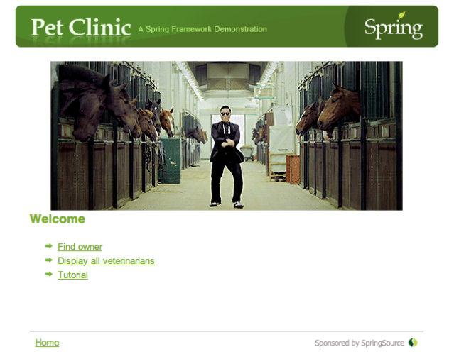
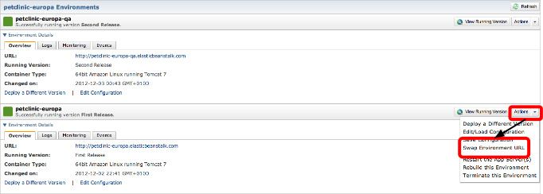
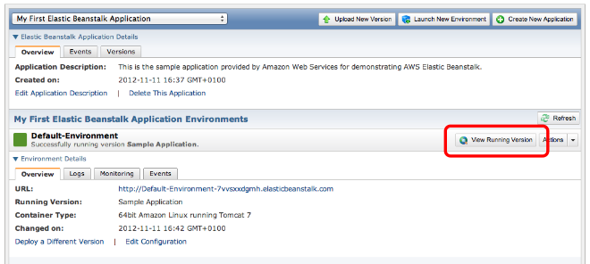
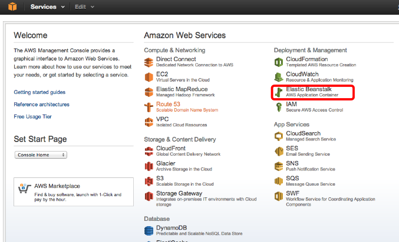
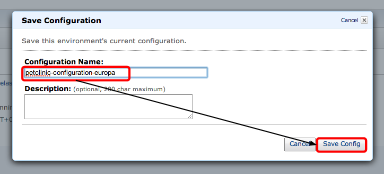
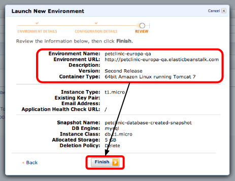
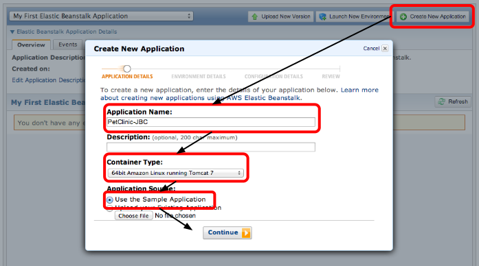
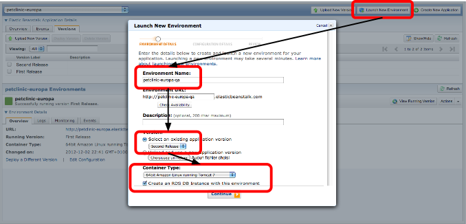
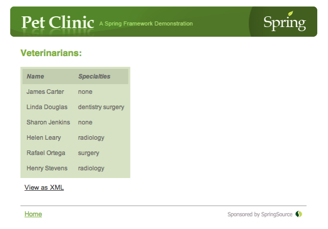
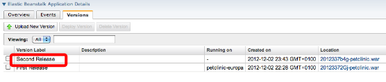

Deploy an application with “Elastic Beanstalk”
Create a new sample application
Environment Details (Option A : create a DB Instance with the environment)
Configuration Details (Option A : Create the DB from a snapshot)
Deploy PetClinic application in place of the sample application
Providing url to the MySQL instance
Deploying Petclinic when we do not provide a RDS DB snapshot
Saving your QA environment configuration settings
Prérequis:
JDK6
The AWS console is here: https://xebia-france.signin.aws.amazon.com/console
The login and password are the one provided on the workshop sheet on the table.
Go to Amazon Console home page and click on “Elastic Beanstalk” :
Click on “Create New Application”.
Then in the modal window provide the “Application-Name” type ‘petclinc-{{ page.groupId }}’
Select “Container Type” : “64bit Amazon Linux running Tomcat 7”
Select “Application Source” : “Use the Sample Application”.
Click on “Continue”

Check “Launch a new environment running this application” and “Create an RDS DB Instance with this environment”.
Provide the “Environment Name” : you can use the application name you provided in the previous step adding “-Env” to the end.
Provide an environment url (this will be your application url).




Once the Beanstalk test application environment is up then you should have the following screen
Click on the “View Running Version” to see your first application deployed on Beanstalk:


Testing the PetClinic application
Well it doesn’t work well right now …
We should take a look to the logs files
Looking a the detail to the log we ca find out that the database is not found.
We need to provide the url of the RDS MySQL database instance to our PetClinic application.

Before providing the url to our application we need to know the DB Endpoint url.
Select the url and copy it in the clipboard.

Provide the jdbc connection string. For example:
jdbc:mysql://aar34zgkhl2dcm.cccb4ickfoh9.eu-west-1.rds.amazonaws.com:3306/petclinic?user=root&password=rootroot
Obviously for your own petclinic application you should set your own DB Endpoint with the one you’ve copied previously.
When you’ve provided the url in the JDBC_CONNECTION_STRING environment variable, click on “Apply Changes”.

When the environment has finished restarted, check again the petclinic application.
Now we are going to deploy the petclinic application with a mysql database.

Click on “Edit Configuration” and select “Database” Tab

Check “Create an RDS DB Instance with this environment”
Provide the following configuration:
Allocated Storage: 5 GB
Master Username: root
Master Password: rootroot

Once done click on “Apply Changes”.
When the RDS DB Instance is up click again on “Edit Configuration” and select the “Database” tab:

Remember the “DB Endpoint”.
Click Cancel to close “Edit Configuration” modal window.
Now go to RDS management console. Click on “Console” and choose “RDS”:

In the RDS Console click on “DB Instances

This will display the current active DB instances:

If there is more than one you will need to use the name of the “DB Endpoint” you previously set aside and you will get the name of the “Security Group” linked to the DB Instance.


With your mysql client from your computer connect to the RDS Database :

One you are connected to the distant RDS MySQL Instance you can create the “petclinic” database:
create database petclinic;
Now that we have created the database in the RDS MySQL Instance we have to close the access we previously opened.
To do that we remove “CIDR/IP” “Connection Type” by clicking on the “Remove” button.
Finally click on “Refresh Security groups”
Return on the Beanstalk instance:

We are going to provide the JDBC url to our application using a system property named JDBC_CONNECTION_STRING.
The url should be of the form:
jdbc:mysql://aa1eh8jwqqq5ght.cccb4ickfoh9.eu-west-1.rds.amazonaws.com:3306/petclinic?user=root&password=rootroot
The bold string should be replaced by your own RDS mySQL instance.

Beanstalk is going to restart the tomcat server with the system property properly set.
Once restart is done select the “Versions” tab,
Click on “Upload New Version” and
Now Tomcat instance is restarted.

When Tomcat is up with our new war file click on “View Running Version” and use the petclinic web app to check database access works fine.


Download Elastic Beanstalk Command Line Tool at URL http://aws.amazon.com/code/6752709412171743
Unzip the archive in the <workshop_directory>.
Add the directory <workshop_directory>/AWS-ElasticBeanstalk-CLI-2.2/api/bin to your PATH.
In your <workshop_directory> create a file named credentials and write the following lines:
AWSAccessKeyId=Write your AWS access ID
AWSSecretKey=Write your AWS secret key
(check your mails for the values)
Add the environment variables:
export AWS_CREDENTIAL_FILE=<workshop_directory>/credentials
export ELASTICBEANSTALK_URL=https://elasticbeanstalk.eu-west-1.amazonaws.com
Si erreurs avec JSon lors de l’éxecution des commandes:
$sudo gem install json |
source:
http://docs.amazonwebservices.com/elasticbeanstalk/latest/dg/usingCLI.html
$ elastic-beanstalk-create-application -a 'GEG-WorkshopApplication' |
$ elastic-beanstalk-create-application-version -a GEG-WorkshopApplication -l 'V1' -d 'Test CLI' -s elasticbeanstalk-eu-west-1-010154155802/2012322ige-petclinic.war |
=> Your application must be uploaded on a S3 bucket before you can launched it with beanstalk.
Create a file to set the options of your next environment.
To see the avalaible options, follow this url: http://docs.amazonwebservices.com/elasticbeanstalk/latest/dg/command-options.html
